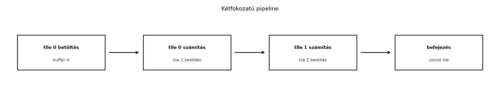

A dupla pufferelés és a pipeline nem csupán egy újabb optimalizálási
trükk, hanem a GPU-programozás egyik központi gondolata: a memória és a
számítás valójában két, egymástól részben független erőforrás, amelyeket
akkor használunk ki jól, ha egyszerre dolgoztatjuk őket. Az előző
alfejezetben megismert cp.async lehetővé tette, hogy a
globális memóriából a shared memoryba irányuló másolást anélkül indítsuk
el, hogy a szálnak várnia kellene a befejezésre. Ebben az alfejezetben
ezt az aszinkron másolást többszintű csővezetékké szervezzük, és
megnézzük, hogyan lehet a másolási késleltetést a számítás mögé
rejteni.

A GPU végrehajtási modelljében a memóriaműveletek és az aritmetikai utasítások más-más hardveregységeken futnak. A globális memóriából a shared memoryba irányuló másolás tipikusan több száz órajelciklusig is eltart, miközben az SM számítási egységei eközben üresen járhatnak, ha a kernel szinkron módon vár. Ez a latencia-elrejtés alapkérdése: nem a memória műveletet kell gyorsabbá tenni önmagában, hanem a várakozási időt hasznos számítással kell kitölteni.
A hagyományos, szinkron tilingnél a blokk életciklusa ismétlődő szakaszokból áll:
__syncthreads() biztosítja, hogy a teljes csempe
rendelkezésre álljon,__syncthreads() biztosítja, hogy a shared memory már
nem kell, mielőtt a következő csempe felülírná.Ebben a menetrendben a másolás és a számítás soha nem fut egy időben. A második lépés alatt az SM számítási egységei többnyire tétlenek, míg a negyedik lépés alatt a memória-útvonalak nem dolgoznak. A pipeline célja az, hogy a következő csempe másolása már akkor folyamatban legyen, amikor az aktuális csempe feldolgozása még tart.
A dupla pufferelés ennek a legegyszerűbb megvalósítása. Két shared memory puffert tartunk fenn; amíg az egyikből számolunk, a másikba töltjük a következő adagot. A csere nem adatot mozgat, hanem csak a pufferszerepeket cseréli fel. A megfelelő szinkronizációval elérhető, hogy a másolási késleltetés egy része vagy egésze a számítási idő alá kerüljön.
A „stage” kifejezés a pipeline egy szakaszát jelöli. A legegyszerűbb esetben két szakasz van:
A két szakasz között egy szinkronizációs pont, azaz barrier biztosítja, hogy a consumer csak akkor kezdje el a puffert olvasni, ha a producer már befejezte a feltöltését, és hogy a producer ne írja felül a puffert addig, amíg a consumer még olvassa.
A pipeline mélysége azt mondja meg, hogy hány csempe feldolgozása lehet egyszerre folyamatban a különböző fázisokban. A kétfokozatú pipeline két puffert használ, és egyszerre legfeljebb két csempe van jelen: az egyik már betöltve, a másik éppen töltődik vagy feldolgozás alatt áll. A háromfokozatú pipeline három puffert használ, és így tovább.
Fontos megkülönböztetni a pufferek számát a pipeline tényleges mélységétől. A kétpufferes séma általában egy csempe számítását és a következő csempe másolását fedi át, ezért két szakasz mélységű. A hárompufferes sémában a másolási, az esetleges előkészítő és a számítási fázisok jobban szétválaszthatók.
A barrier itt nemcsak a __syncthreads() hívást jelenti,
hanem a csővezeték szakaszainak találkozási pontját is. A CUDA aszinkron
másolási modelljében kétféle várakozásra van szükség:
cp.async
csoportokhoz tartozó wait_group a másolás hardveres
állapotát figyeli. Ez nem blokkolja a teljes blokkot, csak az adott
szálat, és nem garantálja a shared memory láthatóságát a többi szál
számára.__syncthreads() a blokk összes szálát egy pontra hozza, és
memória-akadályt is jelent. Erre azért van szükség, mert a másolást
tipikusan több szál együtt végzi, és a consumer szakasz csak akkor
olvashat, ha minden producer szál végzett.A helyes minta tehát az, hogy a másolás befejezésére várunk, majd
__syncthreads()-et hívunk, és csak utána engedjük a
fogyasztói fázist a pufferhez. Ha a sorrend megfordul, versenyhelyzet
keletkezik: a szál elérheti a __syncthreads()-et, mielőtt a
saját másolási csoportja befejeződött volna, és így a többi szál olyan
memóriát olvashat, amelyet még nem írt fel mindenki.
A gyakorlatban a CUDA C++ a következő hívásokat biztosítja a
<cuda_pipeline.h> fejlécben:
__pipeline_memcpy_async(dst_smem, src_gmem, bytes)
elindít egy aszinkron másolást,__pipeline_commit() a megelőző másolásokat egy
csoportba zárja,__pipeline_wait_prior(n) várakoztatja a hívó szálat,
amíg a folyamatban lévő csoportok közül a legutóbbi n
kivételével mindegyik be nem fejeződik.A wait_prior finomabb vezérlést ad, mint az egyszerű
wait_group 0. A n paraméter azt szabályozza,
hogy hány befejezetlen másoláscsoport maradhat még folyamatban. Ez a
többszintű pipeline kulcsa: ahelyett, hogy megvárnánk az összes
másolást, csak a legkorábbi csoportokat várjuk meg, így a későbbi
csoportok még közben tölthetik a saját puffereiket. A
__pipeline_wait_prior(0) megvárja az összes elkötelezett
csoportot.
Alacsonyabb szinten a PTX utasítások a következők:
cp.async.ca.shared.global [dst], [src], 16;cp.async.commit_group;cp.async.wait_group 0;A PTX-szintű kiírás akkor hasznos, ha valaki saját absztrakciót épít, vagy ha a CUDA C++ burkoló hívás viselkedését akarja pontosan ellenőrizni. Ebben a könyvben a hordozható CUDA C++ réteget részesítjük előnyben, de a PTX-formát is bemutatjuk, hogy a mögöttes hardveres viselkedés ne maradjon homályban.
Tekintsünk egy egyszerű, mégis jól mérhető feladatot: egy blokk egy nagy, egydimenziós bemeneti tömb egymást követő csempéit dolgozza fel, és minden csempére egy állítható költségű transzformációt alkalmaz. A transzformáció legyen elég egyszerű ahhoz, hogy a kódot könnyen ellenőrizhessük, de legyen benne egy mesterséges számítási ciklus, amellyel a memória és a számítás arányát hangolni tudjuk.
A kétpufferes kernel vázlata a következő:
// CUDA C++ 17, illusztráció; a pontos launch paramétereket és a
// compute capability viselkedést a laborban ellenőrizni kell.
#include <cuda_pipeline.h>
#include <cstdint>
constexpr int kTile = 4096;
constexpr int kThreads = 256;
__global__ void pipelined_transform_2stage(
const float* __restrict__ input,
float* __restrict__ output,
int n,
int work_per_element)
{
__shared__ float buf[2][kTile];
int tile_idx = blockIdx.x;
int tiles = gridDim.x;
// Az első csempe globális kezdőindexe.
int base = tile_idx * kTile;
// A blokk által kezelt csempék száma.
int my_tiles = (n - base + kTile - 1) / kTile;
if (my_tiles <= 0) return;
// Elindítjuk az első csempe aszinkron betöltését.
int stage = 0;
size_t bytes = kTile * sizeof(float);
__pipeline_memcpy_async(&buf[stage][0],
input + base,
bytes);
__pipeline_commit();
for (int t = 0; t < my_tiles; ++t) {
// A következő csempe másolását már a jelenlegi számítás előtt
// elindíthatjuk, ha van még következő csempe.
int next_base = base + (t + 1) * kTile;
bool has_next = (t + 1 < my_tiles);
// Várunk az aktuális csempe másolására. A wait_prior(1) csak
// a legutóbbi csoport (a következő csempe másolása) előtti
// csoportot várja meg, azaz a jelenlegi csempét.
__pipeline_wait_prior(has_next ? 1 : 0);
__syncthreads();
// Feldolgozzuk a jelenlegi puffert.
for (int i = threadIdx.x; i < kTile; i += blockDim.x) {
int idx = base + t * kTile + i;
float val = buf[stage][i];
for (int w = 0; w < work_per_element; ++w) {
val = 0.999f * val + 0.001f;
}
if (idx < n) output[idx] = val;
}
// Ha van következő csempe, indítsuk el a másolást a másik
// pufferbe. A stage-indexet először átváltjuk.
if (has_next) {
int next_stage = stage ^ 1;
__pipeline_memcpy_async(&buf[next_stage][0],
input + next_base,
bytes);
__pipeline_commit();
stage = next_stage;
}
// A feldolgozás után minden szálnak készen kell lennie a
// pufferrel, mielőtt a következő iteráció felülírná.
__syncthreads();
}
}A kódban a stage változó a két puffer közötti váltást
jelzi. A wait_prior első hívása az adott iterációban a
jelenlegi csempe másolását várja meg, miközben a következő csempe
másolása már elindulhatott. Ha nincs következő csempe, a
wait_prior(0) minden elkötelezett másolást bevár.
A két __syncthreads() közül az első a másolás befejezése
utáni láthatóságot biztosítja, a második pedig azt, hogy a következő
iterációban a másolás ne kezdje el felülírni a még olvasott puffert. A
kódban a __pipeline_wait_prior és a
__syncthreads sorrendje kritikus; ha a
__syncthreads() előbb lenne, a blokk egy része akkor is
átléphetne a feldolgozásra, amikor még nem minden szál másolása
végzett.
A kétpufferes változat a szinkron változathoz képest akkor hoz jelentős gyorsulást, ha a másolási idő és a számítási idő összemérhető. Ha a számítási idő nagyon kicsi, a pipeline nem sokat segít, mert a blokk akkor is a memóriára vár. Ha a számítási idő nagyon nagy, a másolási idő eltörpül, és a pipeline szintén nem látszik jelentősnek. Az optimális tartomány az, amikor a másolás és a számítás időigénye hasonló nagyságrendű.
A kétpufferes pipeline egyszerre egy csempe másolását és egy csempe feldolgozását engedi. A hárompufferes pipeline tovább mélyíti az átfedést: miközben az egyik csempét feldolgozzuk, a következő már töltődik, a harmadik puffer pedig már fogadhatja az azt követő másolási kérelmet, vagy éppen előkészítés alatt áll.
A mélyebb pipeline előnye, hogy a memória-alrendszer hosszabb ideig
telítve marad. A cp.async másolások indítása nem blokkoló,
ezért a szál gyorsan több másolási csoportot is elkötelezhet. A
hardveres várakozási mechanizmusok pontosan ezt a több befejezetlen
csoportot kezelik. A wait_prior(n) paramétere így a
pipeline mélységét szabályozza. Ha a kernelben legfeljebb D
befejezetlen másoláscsoport lehet, akkor a consumer szakasz előtt
tipikusan wait_prior(D-1)-et hívunk, mert a legfrissebb
csoport még hadd folyjon.
A háromfokozatú változat vázlata a következő lehet:
// CUDA C++ 17, illusztráció; a pontos pufferszám és wait_prior érték
// a cél GPU-n mérendő és ellenőrizendő.
constexpr int kStages = 3;
__global__ void pipelined_transform_3stage(
const float* __restrict__ input,
float* __restrict__ output,
int n,
int work_per_element)
{
__shared__ float buf[kStages][kTile];
int tile_idx = blockIdx.x;
int base = tile_idx * kTile;
int my_tiles = (n - base + kTile - 1) / kTile;
if (my_tiles <= 0) return;
int stage = 0;
size_t bytes = kTile * sizeof(float);
// Az első kStages csempe másolását indítjuk el, amennyiben léteznek.
int prefetch = min(kStages, my_tiles);
for (int p = 0; p < prefetch; ++p) {
__pipeline_memcpy_async(&buf[p][0],
input + base + p * kTile,
bytes);
__pipeline_commit();
}
for (int t = 0; t < my_tiles; ++t) {
int next_tile = t + kStages;
bool has_next = (next_tile < my_tiles);
// Várunk az aktuális csempe csoportjára. A legfeljebb
// kStages-1 újabb csoportot hagyunk futni.
__pipeline_wait_prior(has_next ? (kStages - 1) : 0);
__syncthreads();
// Feldolgozás a buf[stage] pufferből.
for (int i = threadIdx.x; i < kTile; i += blockDim.x) {
int idx = base + t * kTile + i;
float val = buf[stage][i];
for (int w = 0; w < work_per_element; ++w) {
val = 0.999f * val + 0.001f;
}
if (idx < n) output[idx] = val;
}
// A következő csempe másolását indítjuk az éppen felszabadult
// pufferbe.
if (has_next) {
int next_stage = next_tile % kStages;
__pipeline_memcpy_async(&buf[next_stage][0],
input + base + next_tile * kTile,
bytes);
__pipeline_commit();
}
stage = (stage + 1) % kStages;
__syncthreads();
}
}Itt a pufferszám és a pipeline mélysége egyaránt
kStages. A prefetch az első néhány csempe
másolását azonnal elindítja, hogy a pipeline ne induljon üresen. A
wait_prior(kStages - 1) pontosan annyi csoportot hagy
életben, amennyi a következő iterációk számára még kell.
A mélység növelése nem korlátlanul kifizetődő. Minden újabb puffer shared memoryt foglal, és minden újabb szint szinkronizációs költséget, valamint regiszternyomást is jelenthet. A túl mély pipeline emellett csökkentheti az occupancy-t, mert a megnövekedett shared memoryigény miatt kevesebb blokk fér el egy SM-en. A legtöbb gyakorlati kernelben a 2–4 szint a jellemző; a nagyobb mélység csak akkor indokolt, ha a másolási késleltetés nagyon nagy, vagy ha a számítási fázis rövid, de sűrűn ismétlődik.
A pipeline akkor működik jól, ha a fogyasztói fázis időtartama
nagyobb vagy egyenlő a producer fázis időtartamánál. Ha a számítási idő
T_c, a másolási idő T_m, és a szinkronizációs
overhead T_s, akkor a kétpufferes változat egy csempére eső
ideje közelítőleg:
T_pipe ≈ max(T_c, T_m) + T_s
A szinkron verzióban viszont:
T_sync ≈ T_c + T_m + T_s
Ez az idealizált modell azt mutatja, hogy a pipeline a két idő közül
a nagyobbikra csökkenti a feldolgozási időt. Ha T_c és
T_m egyenlő, a gyorsulás közel kétszeres. Ha az egyik
sokkal nagyobb a másiknál, a gyorsulás elhanyagolható, mert a
max értékét a nagyobb idő határozza meg.
A valóságban a T_m és a T_c nem mindig
független. A memória-sávszélességen több blokk osztozik, és a számítási
egységek is versenyeznek a regiszterekért, a shared memoryért és a
kibocsátási sávszélességért. Ezért a fenti formula inkább gondolati
keret, mint pontos előrejelzés.
A dupla pufferelés különösen akkor hatékony, ha a másolás időben
elnyúlik, és közben a számítás nem szorul ugyanarra az erőforrásra. A
cp.async utasítások a globális memória és a shared memory
közötti útvonalat használják, míg az aritmetikai utasítások a
regiszterfájlhoz és a végrehajtó egységekhez kötődnek. Ezért a két
tevékenység nagyobb valószínűséggel futhat párhuzamosan.
Az alábbi hibák a leggyakrabban fordulnak elő a double buffering és pipeline implementációkban:
A puffer felülírása a fogyasztás befejezése
előtt.
Ha a második __syncthreads() hiányzik, a gyors szálak
elkezdhetik a következő csempe másolását abba a pufferba, amelyet a
lassú szálak még olvasnak. A tünet nem determinisztikus: időnként helyes
eredmény, időnként eltérés, és a hiba a mérési körülményektől függően
eltűnhet vagy előjöhet. A megoldás az, hogy a feldolgozási ciklus után
mindig __syncthreads() áll, mielőtt a puffer
újrahasznosításra kerül.
A wait_prior és a
__syncthreads() sorrendjének felcserélése.
A __syncthreads() nem várja meg a folyamatban lévő
aszinkron másolásokat. Ha valaki __syncthreads()-et hív a
wait_prior elé, a blokk szálai átléphetnek a fogyasztói
fázisba, miközben a saját másolási csoportjuk még nem fejeződött be. Ez
versenyhelyzet, ezért a wait_prior-t mindig a
__syncthreads() elé kell tenni.
Rossz wait_prior érték
használata.
A wait_prior(0) minden befejezetlen csoportot bevár, ezért
nem hagy semmilyen átfedést. A túl nagy érték viszont megengedi, hogy a
fogyasztó a még befejezetlen puffert olvassa. Az értéket a tényleges
pipeline mélységhez kell igazítani, és a éles kódban érdemes fordítási
idejű konstansként vagy jól dokumentált futtatási paraméterként
kezelni.
Az első csempe másolásának elhagyása a ciklus
előtt.
Ha a pipeline az első iterációban nem talál betöltött csempét, a
fogyasztó szakasz a inicializálatlan shared memoryból olvas. Ez gyakran
NaN-ekben vagy nagy számértékekben jelentkezik, különösen FP32 esetén. A
helyes minta az, hogy a belépés előtt legalább az első csempét
elindítjuk.
A határok és az üres csempék kezelésének
hibája.
A my_tiles, a has_next és a
prefetch logika gyakran hibás, ha a tömb mérete nem
osztható a csempemérettel. A kernelnek pontosan kell kezelnie a hiányos
utolsó csempét, és az írást globális indexellenőrzéssel kell védenie. A
laborban érdemes többféle n értékkel futtatni, beleértve a
kTile - 1, kTile, kTile + 1 és
kStages * kTile közeli méreteket is.
A túlzott mélység miatti
occupancy-csökkenés.
A mélyebb pipeline nagyobb shared memóriát foglal, ezért kevesebb blokk
fér el SM-en. Ha a fogyasztói szakasz amúgy is sok szálat és regisztert
használ, a mélység növelése akár lassulást is okozhat. A mérési naplóban
ezért érdemes az occupancy, a shared memory és a regiszterhasználat
értékeit is rögzíteni.
A labor célja, hogy a fenti mintát saját környezetben, ellenőrzött módon mérje. A következőkben egy CUDA C++ példát adunk, amely egy csempefeldolgozó kernelt valósít meg, és a szinkron, kétpufferes, valamint hárompufferes változatot hasonlítja össze. A kód nem tartalmaz valós hitelesítő adatot, és a futtatáshoz csak saját vagy engedélyezett GPU használható.
A laborhoz CUDA 12.x toolkit és Compute Capability 8.0 támogatású GPU ajánlott. A fordítási parancs a következő lehet:
nvcc -std=c++17 -O3 -arch=sm_80 \
-I. pipeline_lab.cu -o pipeline_labA futtatás előtt a GPU-t ellenőrizni kell:
nvidia-smi --query-gpu=name,driver_version,power.limit \
--format=csvA kernel futtatása előtt legalább 10 bemelegítő iterációt kell végezni, majd a mérést 5–10 ismétléssel, az átlag mellett a szórással együtt kell rögzíteni. A hibás vagy túl hosszú kernel futtatásához timeout-ot és izolált környezetet kell biztosítani.
Az alábbi napló illusztráció; a számok nem mért értékek, hanem a laborban ellenőrizendő helyőrzők.
| Paraméter | Érték |
|---|---|
| GPU | NVIDIA RTX 4070 (helyőrző) |
| Compute capability | 8.9 (helyőrző) |
| DRAM | 12 GB (helyőrző) |
| CUDA | 12.4 (helyőrző) |
| Driver | 550.54 (helyőrző) |
| OS | Ubuntu 22.04 (helyőrző) |
| Power limit | 200 W (helyőrző) |
| ECC | off |
| MIG | off |
| n | 32 MiB float |
| kTile | 4096 float |
| kThreads | 256 |
| work_per_element | 1, 4, 16 |
| Ismétlések | 10 |
| Warm-up | 10 |
A három kernelre mért átlagos futásidő (ms) és a sávszélesség (GB/s) a következő táblázatban foglalható össze:
| work_per_element | Sync | 2-stage | 3-stage |
|---|---|---|---|
| 1 | 4,2 | 3,1 | 2,9 |
| 4 | 5,8 | 3,0 | 2,9 |
| 16 | 9,1 | 8,6 | 8,5 |
A fenti értékek nem mért eredmények, hanem a várható
irányok illusztrációi. A valódi mérésnél a work_per_element
növelésével a számítási idő nő, ezért a memóriaidő relatív súlya
csökken. Alacsony work_per_element értéknél a pipeline
hatása nagyobb, mert a másolás jelentős részt képvisel. Magas
work_per_element értéknél a kernel számítás-korlátos, így a
pipeline kevésbé látszik.
A mérési naplóban a mért és a várt eredményt külön kell jelölni, ahogyan azt a könyv mérési szerződése előírja. A fenti táblázatban ezért szerepel a „helyőrző” megjegyzés.
A 2-stage változat az egyszerű szinkronhoz képest akkor gyorsul, ha a
másolási időt sikerül a számítás alá rejteni. A 3-stage változat további
kis gyorsulást adhat, de a nyereség csökkenő. A mérés során érdemes az
n méretét is változtatni, mert kis méretnél a
kernelindítási overhead dominál, nagy méretnél pedig a
memória-sávszélesség telítődhet.
A cp.async másolásoknak van egy minimális hasznos
mérete. Kis csempéknél a másolásindítás és a szinkronizáció költsége
nagyobb lehet, mint a megtakarított idő. A laborban érdemes a
kTile értékét 1 KiB, 4 KiB, 16 KiB és 64 KiB között is
változtatni, és a legjobb beállítást megkeresni.
A double buffering nem csak CUDA-specifikus. OpenCL-ben a
async_work_group_copy vagy a
clEnqueueCopyBuffer eseményekkel összekapcsolt
parancssor-végrehajtás lehetővé teszi, hogy a másolás és a kernel
végrehajtása átfedésben fusson. A munkacsoporton belüli puffereléshez
hasonló elvek érvényesek, de a szinkronizációt a
barrier(CLK_LOCAL_MEM_FENCE) és az események kombinációja
adja.
JAX-ban a pipeline-t jellemzően a XLA fordító automatikusan alakítja
ki a jax.lax primitívek és a jax.remat vagy a
megfelelő scan operátorok alapján. Haladó esetben a
jax.experimental.pallas segítségével explicit,
kernel-szintű pipeline írható, de ennek részletei túlmutatnak ezen
alfejezet keretein. A TPU/OpenCL példáknál is fel kell tüntetni, ha a
kód csak fordítási ellenőrzésen esett át, és nem futott valódi
hardveren.
__pipeline_wait_prior(1) helyett
__pipeline_wait_prior(0)-t hívunk a következő csempe
másolásának indítása után?T_pipe ≈ max(T_c, T_m) + T_s összefüggéssel.A válaszok ellenőrzéséhez a következő gondolatmenet használható. Az
1. kérdésnél az első __syncthreads() a másolás befejezése
utáni láthatóságot, a második a puffer újrahasznosításának biztonságát
adja. A 2. kérdésnél a wait_prior(0) minden befejezetlen
másolást bevár, ezért a következő csempe másolása nem folyik a számítás
alatt, és a pipeline elveszti az átfedési előnyét. A 3. kérdésnél a
max(T_c, T_m) értékét a nagy számítási idő határozza meg,
ezért a csővezeték nem tudja csökkenteni a teljes időt, mert a
memóriaidő eltörpül a számítás mellett.
A Tiling és pipeline mérése alfejezet ezt a
fogalmat a tiling és a pipeline együttes mérésére terjeszti ki. Ott a
cp.async mellett a hagyományos szinkron másolást, a
vektorizált betöltést és a csempeformák hatását is összehasonlítjuk. Az
itt bemutatott két- és hárompufferes minta lesz az alapja annak a mérési
keretnek, amelyben a Roofline-modell és az occupancy közötti kapcsolatot
is számszerűsíteni fogjuk.